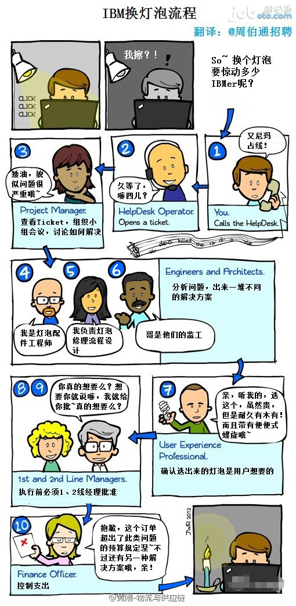
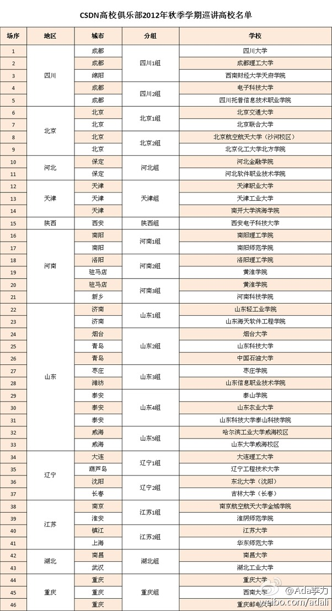

解释大公司的流程真形象，这是对外面客户。俺曾内部申请个圆珠笔走的流程也很类似。@黄刚:【大公司的管理通病：内耗】一张IBM换灯泡的流程图可以看出大公司的管理内耗...遇到类似情况的朋友请果断转走....(图片翻译@周伯通招聘) 
面向世界的思路很对。//@陈沙克: 中国的市场很大，不过对于开源来说，中国的市场又很小。中国要做开源，只能是面向世界。如果只是中国本土，基本是没啥出路，除非是中国特色的应用。---:该账号因被投诉违反《微博社区公约》的相关规定，现已无法查看。查看帮助 网页链接
@庄表伟 @程开源 这就是你们之前想过的那种推广开源技术到高校的模式，要不要参加？ 9月开学季CSDN高校俱乐部专家巡讲讲师招募 - liushizao的专栏 - 博客频道 - CSDN.NET 网页链接 
当谈到社区概念，最重要的是“人人”概念。研究社区是要研究社区中的每个人怎么与其他人交流，怎么互动，怎么相互影响，怎么合作，怎么集体行动。正如《未来是湿的》的英文书名“Here Comes Everybody ”（人人时代）。" 科斯法则下的社区 - 《未来是湿的》读后感 " CSDN.NET 网页链接
推广//@谌良仲:推广！//@就是老花眼: 建议推广！//@vivi微微: 然后掏出白手绢，尽情挥舞，没有白手绢可以用餐巾纸代替，在西班牙斗牛场上学的这招 //@宁财神:转发微博。---:抱歉，此微博已被作者删除。查看帮助： 网页链接